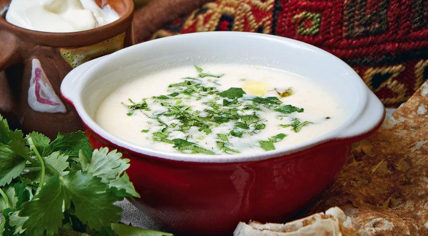
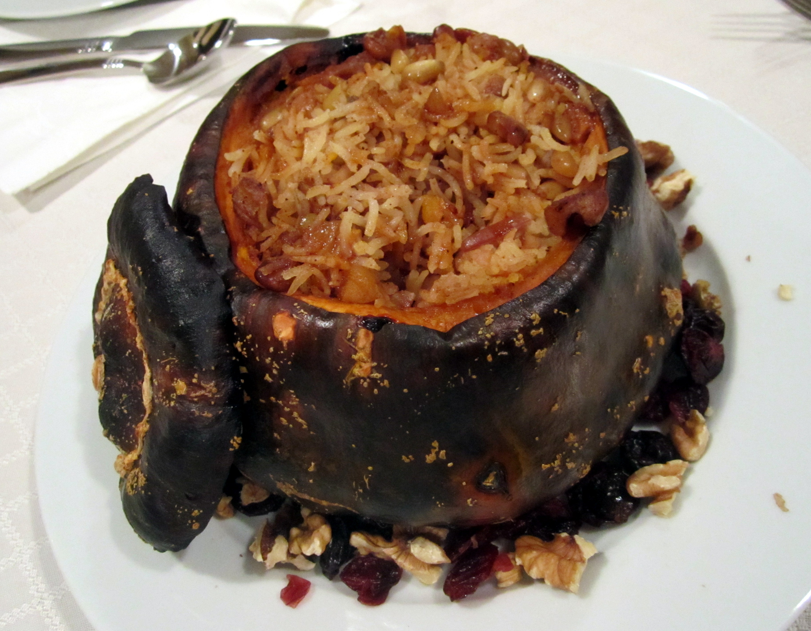
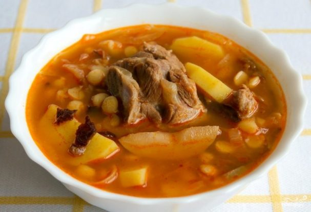
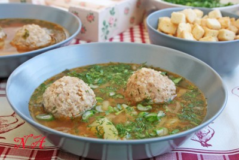
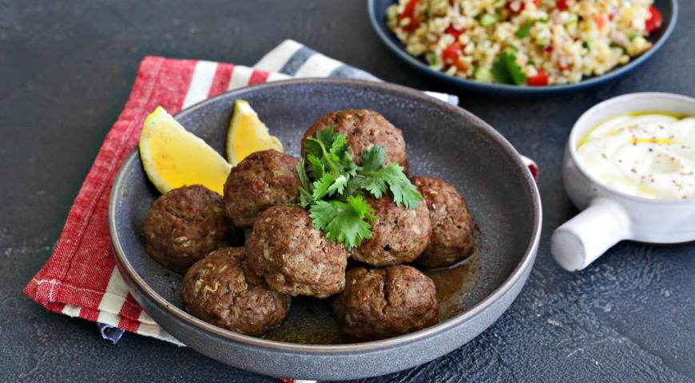
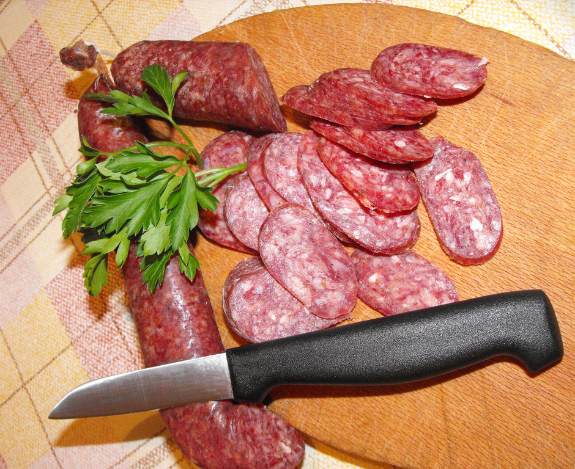
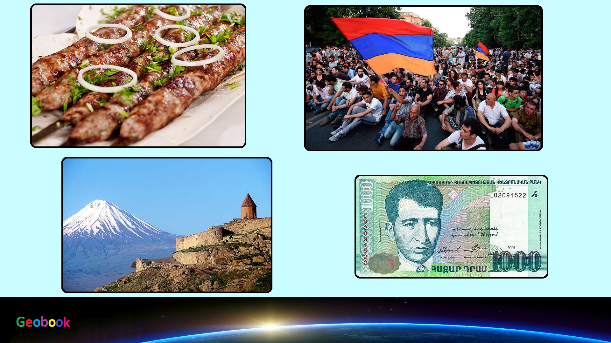

____
Традиционная еда
Спас (суп) — блюдо армянской кухни, суп на кисломолочной основе.

Хапама — армянская фаршированная тыква. Это блюдо часто готовят во время курортного сезона. Хапама в национальных традициях подавалась к столу на свадьбу, как символ изобилия.

Бозбаш — блюдо, распространённое на Кавказе в виде заправочного супа на основе бульона из баранины. От других заправочных супов отличается обязательными ингредиентами в виде нута (он же турецкий горох, бараний горох, нохут, нат) и каштанов (последние допускается заменять картофелем).

Кололак — армянский суп из баранины, который варится преимущественно на костном бульоне. По сути, кололак — суп с фрикадельками. Однако по составу входящих в него продуктов, вкусу и технологии это блюдо сильно отличается от соответствующих европейских.

Кюфта — род фрикаделек, сделанных преимущественно из баранины; традиционное блюдо стран Ближнего Востока и Южной Азии.

Суджук — традиционные колбасы у тюркских, балканских и ближневосточных народов. В период Османской империи это блюдо получило широкую известность у арабов (سجق), греков (σουτζούκι), армян (սուջուխ), болгар (суджук), сербов, хорватов, боснийцев и македонцев (сербохорв. sudžuk, cyџук).

Амич — блюдо армянской кухни, приготовляемое из мяса птицы (чаще всего из индейки или курицы) и наполненное рисом с сухофруктами. Название блюда встречается в рукописях армянских авторов Фавстос Бузанда (V век) и Егише (V век)

____
